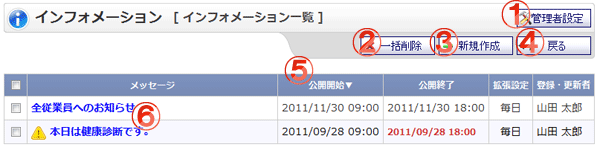

インフォメーション一覧画面です。

機能説明
管理者設定ボタン管理者設定メニュー画面へ遷移します。管理者グループに所属していないユーザの場合、ボタンは表示されません。 |
一括削除ボタン選択したインフォメーションを一括削除します。 |
|---|---|
新規作成ボタンインフォメーション登録画面に遷移します。 |
戻るボタン遷移元の画面へ遷移します。 |
ヘッダタイトルクリックによって一覧のソート条件の切り替えを行います。現在ソート条件になっている項目をもう1度クリックすると「昇順」「降順」が切り替わります。 |
検索結果内容メッセージ、公開開始日時、公開終了日時、拡張設定、登録・更新者を表示します。メッセージをクリックするとインフォメーション変更画面へ遷移します。 |